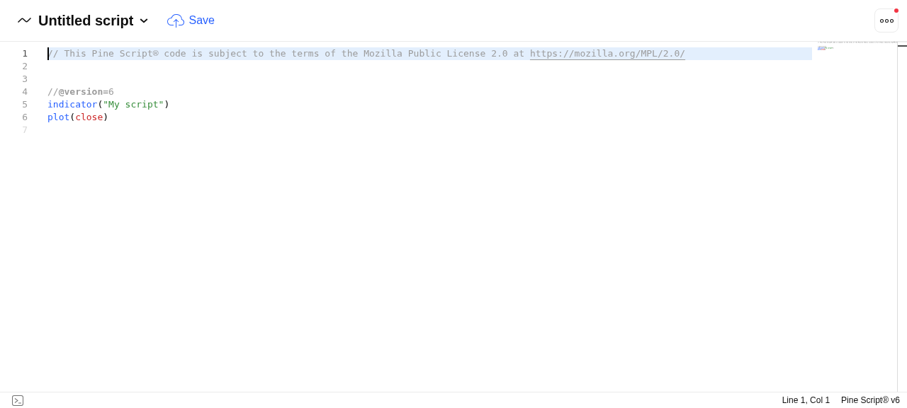

ctma_indicator.pine ／ 策略版 ctma_strategy.pine
沙盒環境沒有 TradingView 帳號憑證，無法登入。未登入狀態下
https://www.tradingview.com/pine/ 確實能開啟 Pine Editor（已截圖佐證），
但把腳本內容寫入 Monaco 編輯器後，瀏覽器自動化 daemon 卡死，無法可靠讀取編譯器狀態。
因此本報告不會聲稱「TradingView 編譯成功或失敗」。
取而代之，我改用真實的開源 Pine Script v6 編譯器／執行引擎 PineTS 做編譯層級驗證 —— 這比純靜態檢查強得多，但仍不等於 TradingView 編譯。最後一步仍需你本人貼進 Pine Editor 確認。
| 方法 | 性質 | 結果 |
|---|---|---|
| TradingView 網頁登入 + Pine Editor 貼上編譯 | 真實編譯器 | 未取得 — 無帳號憑證；未登入 scratch 編輯器可開，但貼入後 daemon 卡死 |
PineTS（npm pinets 0.11.0）— 開源 Pine v6 編譯器＋執行引擎 |
真實引擎 | 兩份腳本皆編譯並執行成功，輸出真實數值 |
@opus-aether-ai/pine-transpiler 0.4.11 — 開源 Pine→JS 轉譯器 |
真實工具 | 兩份腳本皆轉譯成功（JS 12,985 / 11,211 字元） |
自製 pine_static_check.py — 依官方文件規則的靜態分析 |
靜態推論 | 46 PASS / 0 WARN / 0 FAIL |
| 人工逐條規則複核（var 作用域、na 布林、tuple 元數…） | 人工推論 | 無額外發現 |
curl 確認 tradingview.com 可連線（HTTP 200），但頁面 HTML 帶 is-not-authenticated — 未登入。/chart/，圖表正常載入（AAPL 報價可見），但底部面板收合、找不到 Pine Editor 分頁。https://www.tradingview.com/pine/ — 成功開啟 Pine Editor，且有一個可編輯的 Monaco textarea.inputarea。execCommand('insertText') 成功把腳本寫入編輯器（小腳本測試通過，內容確實進入 .view-lines）。Resource temporarily unavailable 並卡死，無法讀取錯誤標記或編譯狀態。
/pine/ 確實開啟 Pine Editor（左側為編輯區、右側為圖表）。這是「可開啟」的證據，不是「編譯成功」的證據。
PineTS 是一套獨立的開源 Pine Script v6 編譯器與執行引擎（npm pinets，由 LuxAlgo 支持）。
它會把原生 Pine v6 原始碼轉譯成 JavaScript 並實際執行，輸出 plot 序列。
這證明原始碼在一個真實的 Pine v6 引擎下能解析、能轉譯、能執行。
| 檔案 | 行數 | plot 數 | PineTS 結果 |
|---|---|---|---|
ctma_indicator.pine |
341 | 17 | 編譯＋執行成功 |
| |||
ctma_strategy.pine |
280 | 16 | 編譯＋執行成功 |
| |||
執行輸出的數值符合 BTC 實際價位（EMA 快線 83,286.87、Supertrend 79,755.57），
證明這不是空跑 —— 引擎真的在算指標。停損／停利序列在無持倉時為 na（有效值 0 根），
這正是正確行為：沒有部位就沒有停損線。
一個「什麼都說 OK」的驗證器毫無價值。我把故意寫壞的 Pine v6 腳本餵給同一個引擎， 量出它的覆蓋邊界：
| 故意植入的錯誤 | PineTS 是否抓到 |
|---|---|
| var 在 if 區塊內宣告 | 未抓到 |
| 裸 na 當布林使用 | 未抓到 |
| location.absolute 給布林值 | 未抓到 |
| 括號未閉合（語法錯誤） | 抓到 |
| 未知函式 ta.notARealFunction | 抓到 |
誠實結論：PineTS 抓到 2/5。
var 在 if 內宣告、裸 na 當布林、location.absolute 型別錯誤。這三類正是 TradingView 編譯器會擋、而第三方引擎不擋的型別／作用域規則。 所以它們必須由靜態檢查器補上（見 ④）—— 兩者互補，缺一不可。
自製 pine_static_check.py 依 Pine v6 官方文件規則逐條檢查，兩份腳本各 23 項：
python3 pine_static_check.py pine/ctma_indicator.pine pine/ctma_strategy.pine → 23 PASS / 0 WARN / 0 FAIL (ctma_indicator.pine) → 23 PASS / 0 WARN / 0 FAIL (ctma_strategy.pine) ───────────────────────────────────────────── 總計：46 PASS / 0 WARN / 0 FAIL (共 46 項)
涵蓋你指定的每一項：
| 檢查項 | 結果 |
|---|---|
var 全在全域（無一在 if/for/while 內） | 9 個（指標）／7 個（策略），區塊內 = 0 |
| tuple 解構元數正確 | ta.supertrend 雙值、ta.macd 三值皆正確 |
hline 僅用於常數水平線 | 1 次呼叫，誤用 0 次 |
plot.style_* / shape.* 命名空間 | 全部完整命名空間 |
alertcondition 在全域 | 6 個（指標）／4 個（策略），區塊內 = 0 |
| 無未使用 input | 31 個 input，未使用 = 0 |
| 無未來函數（request.security / lookahead） | 完全未使用，lookahead = 0 |
歷史引用以 nz() 保護 | 未保護者 = 0 |
在工具輸出之上，我依 statically-validating-pine-scripts 技能規則逐條人工複核：
var 作用域、na 布林運算、location.absolute 型別、
alertcondition 位置、tuple 元數、序列 vs 純量、plot/hline 用法。
未發現工具漏掉的額外問題。
無需修正。 兩份 .pine 檔在 v4 已修正過三類問題
（location.absolute 型別、同作用域重複宣告、裸 na 布林），
本次驗證的檔案與 v4 MD5 完全相同：
e0c00a778fa1b263c67cdce09cf8a04e ctma_indicator.pine 85ef630125f86173b515ae49b641114e ctma_strategy.pine
三種驗證（PineTS 執行、轉譯器、靜態檢查 46/46）全部通過，因此本版未改動任何一行。
這是唯一無法在沙盒內完成的環節。TradingView 的編譯器會做第三方引擎不做的型別推導與重載解析，請務必自行確認一次：
tradingview.com/pine/）。ctma_indicator.pine 全文貼進編輯器，按 Save → Add to chart。ctma_strategy.pine 重複一次（策略版可另開 Strategy Tester 看回測）。貼上後指標版應在圖上看見 ▲▼ 買賣點、紅／綠停損停利線與右上資訊面板； 策略版則可開啟 Strategy Tester 檢視淨利／MDD／勝率。
| 檔案 | 連結 |
|---|---|
指標版 ctma_indicator.pine | 下載 |
策略版 ctma_strategy.pine | 下載 |
PineTS 驗證腳本 verify_pinets.mjs | 下載 |
負向對照 negative_control.mjs | 下載 |
靜態檢查器 pine_static_check.py | 下載 |
PineTS 原始輸出 pinets_verify.json | 下載 |
靜態檢查原始輸出 pine_static_check.json | 下載 |
# 1) 編譯層級驗證（需 Node.js） cd pine_verify npm install node verify_pinets.mjs # → 兩份腳本 COMPILED_AND_EXECUTED_OK node negative_control.mjs # → 校準工具覆蓋邊界（2/5） # 2) 靜態檢查（僅需 Python 3） cd .. python3 pine_static_check.py pine/ctma_indicator.pine pine/ctma_strategy.pine
本報告所有內容（含指標腳本、策略腳本、驗證結果與說明）僅供教育與研究用途， 不構成任何投資建議、要約或推薦。歷史績效不代表未來表現。 指標訊號基於歷史價格計算，無法預測未來走勢；加密貨幣波動極大，可能導致全部本金損失。 任何交易決策應由使用者自行判斷並承擔風險。
As an AI Agent, I cannot provide legally protected, personalized investment advice. This analysis is for informational purposes only and does not constitute investment advice or recommendations. Consult a licensed financial advisor before making investment decisions.